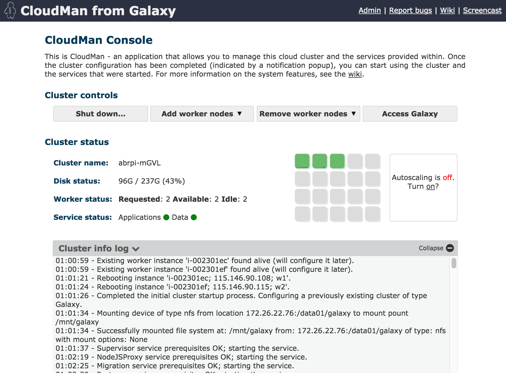
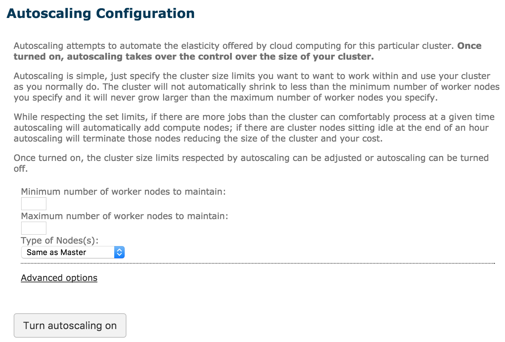

layout: true class: inverse --- class: special, center  # All these Clouds ## It's positively meterological.. **Slides: @Slugger70, @nuwang, @afgane** .normal[ .footnote[\#usegalaxy \#GATC2016 / @galaxyproject] ] --- layout: true class: left, inverse --- class: left, middle, center  ## Please interrupt *We are here to answer questions!* .footnote[\#usegalaxy \#GATC2016 / @galaxyproject] --- class: left ##  Overview .large[ * Galaxy in the Clouds? * AWS and other Clouds * CloudMan and CloudLaunch (& cloud agnosticisim) * CloudMan Galaxy * Architecture * Persistence * Taking it further - The GVL * Other cloud usage - burst! ] .footnote[\#usegalaxy \#GATC2016 / @galaxyproject] --- class: left ##  Help! .large[ * Galaxy server flat out? * Queue longer than a Grateful Dead concert? * An urgent job to run? What do you do now? ] .footnote[\#usegalaxy \#GATC2016 / @galaxyproject] --- class: left ##  Help! .large[ * Galaxy server flat out? * Queue longer than a Grateful Dead concert? * An urgent job to run? What do you do now? .special[Use the cloud man!] ] .center[] .footnote[\#usegalaxy \#GATC2016 / @galaxyproject] --- class: left ##  Clouds? **Cloud computing** ... is a model for enabling ubiquitous, **on-demand** access to a **shared pool** of configurable **computing resources** ... which can be **rapidly provisioned and released** with minimal management effort. Cloud computing and storage ... may be located far from the user – ranging in distance from **across a city to across the world.** - Wikipedia, Cloud Computing. .center[  ] .footnote[\#usegalaxy \#GATC2016 / @galaxyproject] --- class: left ##  Available Clouds .large[ * Amazon Web Services * Pay-per-time/machine etc. * Pretty cheap * Large range of instance configurations * Education grants * Open Stack * Open source community project * Nectar in Australia, JetStream in USA, CLIMB in UK, lots of others * Some free for researchers (Nectar, CLIMB), some with project grants (Jetstream) ] .footnote[\#usegalaxy \#GATC2016 / @galaxyproject] --- class: left ##  Why Clouds? .large[ * Elastic compute! * Can dynamically resource analyses * No need to maintain the hardware * Provider takes on cost of hardware and maintenance * Cost is shared between all users * Move the compute to the data * Data on East Coast? * Start compute there. Save on data transfer. ] .footnote[\#usegalaxy \#GATC2016 / @galaxyproject] --- class: left ##  Galaxy on the Cloud .large[ * There are cloud images (VM blueprints) available * with Galaxy pre-installed * with different sets of tools installed * with access to reference data * for different clouds. (AWS globally, JetStream, Nectar, CLIMB etc.) * You just need credentials for the cloud you want to "launch" on. * Credentials are generally two strings, * An access key and a secret key * They are obtained from the cloud account admin page you want to use. ] .footnote[\#usegalaxy \#GATC2016 / @galaxyproject] --- class: left ##  Cloud Launch .large[ * Cloud launch is a system for launching Galaxy on cloud resources * Web interface located at launch.usegalaxy.org * Fill in the credential details, choose a location and machine size * Press go! * The cloud will now provision you a computer in the cloud with Galaxy installed and ready to go. * Depending on your choices and availability you will also have access to reference data and various tools * It should only take 2-3 minutes for everything to be set up. ] .footnote[\#usegalaxy \#GATC2016 / @galaxyproject] --- class: left ##  Launch Demo .large[ * Launch a Galaxy on the Cloud in NeCTAR. * Similar process to AWS (but free for me) * `launch.genome.edu.au` * [launch.usegalaxy.org](launch.usegalaxy.org) * Walk through what is happening. * Beta Launch (Cloud Launch 2.0) * [beta.launch.usegalaxy.org](beta.launch.usegalaxy.org) ] .footnote[\#usegalaxy \#GATC2016 / @galaxyproject] --- class: left ##  Cloud Manager .center[] .large[ * Cloud manager - Some middle ware to control cloud clusters. * Can be used to control services such as Galaxy! * Can mount filesystems, add/remove worker nodes, start/stop services ] .footnote[\#usegalaxy \#GATC2016 / @galaxyproject] --- class: left ##  CloudMan .center[] .footnote[\#usegalaxy \#GATC2016 / @galaxyproject] --- class: left ##  CloudMan Admin .center[<img src='images/cloudman-admin.png' width=80%>] .footnote[\#usegalaxy \#GATC2016 / @galaxyproject] --- class: left ##  Cluster on the Cloud? .large[ * Your cloud instance is a single machine * It is the "Head node" of a cluster * CloudMan can start "worker" nodes. * More cloud instances (of any size) * Automatically connects to file system * Are registered in slurm setup * A node will take ~2-3 minutes to start and configure. ] .footnote[\#usegalaxy \#GATC2016 / @galaxyproject] --- class: left ##  Dynamic Scaling .large[ * Can set up dynamic scaling * Upper and lower node numbers * When queue is full and jobs wait certain time, new nodes are launched. ] .center[] .footnote[\#usegalaxy \#GATC2016 / @galaxyproject] --- class: left ##  CloudMan Galaxy .large[ * Your Galaxy server is set up and ready to go! * Includes large list of pre-installed tools. * Includes access to reference data files * Zero-to-go in less than 10 minutes. * Toolsets and reference sets can be tailored to suit needs * Will be discussed in architecture section ] .footnote[\#usegalaxy \#GATC2016 / @galaxyproject] --- class: left ##  CloudMan Galaxy .pull-left[ <img src='images/Cloudman-tools.png' height=85% /> ] .pull-right[ <img src='images/reference_data.png'/> ] .footnote[\#usegalaxy \#GATC2016 / @galaxyproject] --- class: left ##  CloudMan Galaxy * Configured for Slurm out of the box ```xml ... <destinations default="default_dynamic_job_wrapper"> <destination id="slurm_cluster" runner="slurm"/> <destination id="slurm_4slots" runner="slurm"> <param id="nativeSpecification">--ntasks=4</param> </destination> <destination id="default_dynamic_job_wrapper" runner="dynamic"> <param id="type">python</param> <param id="function">default_dynamic_job_wrapper</param> </destination> ... </destinations> <tools> <tool id="toolshed.g2.bx.psu.edu/repos/devteam/bwa/bwa/0.3.1" destination="slurm_4slots" /> ... ``` ``` ini # COMPUTE NODES NodeName=master NodeAddr=45.113.232.91 CPUs=15 RealMemory=64431 Weight=10 State=UNKNOWN NodeName=w1 NodeAddr=45.113.232.83 CPUs=16 RealMemory=64431 Weight=5 State=UNKNOWN NodeName=w2 NodeAddr=45.113.232.92 CPUs=8 RealMemory=32176 Weight=5 State=UNKNOWN NodeName=w3 NodeAddr=45.113.232.93 CPUs=8 RealMemory=32176 Weight=5 State=UNKNOWN ``` .footnote[\#usegalaxy \#GATC2016 / @galaxyproject] --- class: left ##  CloudMan Architecture  .footnote[\#usegalaxy \#GATC2016 / @galaxyproject] --- class: left ##  Persistence .large[ * Cloud instances are typically transient * Can be terminated and resources returned to the pool * However, user data, cluster configuration etc can be persisted. * Then can be attached to new instance when they start * Can be s3, object store, volumes, nfs * Cloudman stores an instance's set up in a s3 bucket or object store container ] .footnote[\#usegalaxy \#GATC2016 / @galaxyproject] --- class: left ##  Taking it Further .large[ * Genomics Virtual Lab - an example ]  .footnote[\#usegalaxy \#GATC2016 / @galaxyproject] --- class: left ##  Cloud Burst * Nate talked about attaching clusters this morning! .footnote[\#usegalaxy \#GATC2016 / @galaxyproject]